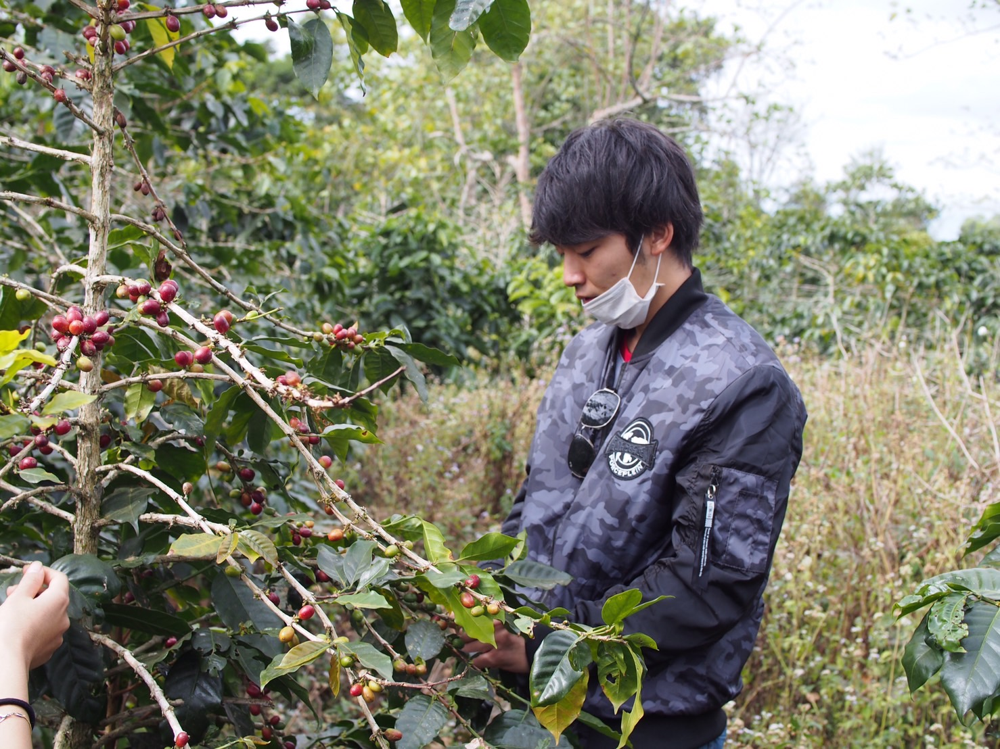
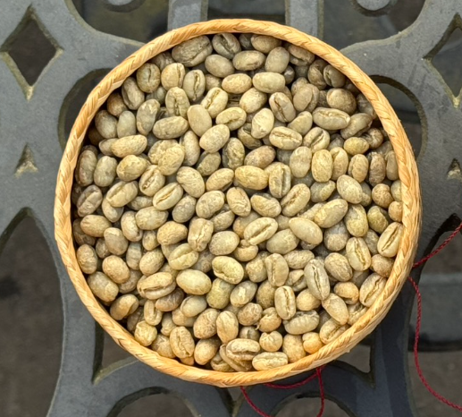

オーナーがラオス現地を訪れた際にコーヒーの圧倒的な魅力に出会ったことから、「ちばらき珈琲」は創業しました。
私たちは、生産者と消費者をつなぐフェアトレードを通じた現地の生活向上や直接的な農業支援に取り組み、日本国内ではセミナーやコーヒー教室を通じて知識の共有に尽力しています。


通常、コーヒーの実の中には2つの「平豆（フラットビーン）」が向かい合って育ちます。しかし、ごく稀に1つの種子が丸々と合体して育つことがあります。この丸い種子を「ピーベリー」と呼びます。
栄養が1つの豆に贅沢に集中するため、通常のフラットビーンと比較して、コクと香りが圧倒的に強いのが特徴です。当店ではこのピーベリーのみを厳選して取り揃えています。
焙煎仕立ての新鮮なスペシャルティピーベリーコーヒー豆を、全国どこからでもご購入いただけます。様々な産地の豆を100gからご用意しております。
ちばらき珈琲自慢のピーベリーコーヒーは、茨城県守谷市のふるさと納税返礼品にも選定されています。下記の推奨キーワードで各ポータルサイトから検索いただけます。
ご自宅やオフィス、地域のサークル活動先へ伺い、プロのドリップ技術をレクチャーする「ハンドドリップ抽出体験コース (120分)」や、国際支援を学ぶ「歴史とフェアトレードのお話 (120分)」をご提供しています。
最大30名様まで、講師と助手の2名体制で徹底サポート。WEB上で簡単に見積もりが計算できる「シミュレータ」もご用意しています。
| 正式名称 | ちばらき珈琲 |
|---|---|
| 所在地 | 〒302-0121 茨城県守谷市みずき野５丁目３ |
| 電話番号 | 0297-33-9252 |
| 営業時間 | 木曜日 〜 火曜日 10:00 〜 18:00 |
| 定休日 | 水曜日 |
| アクセス | 常総線「戸頭駅」徒歩8分 |